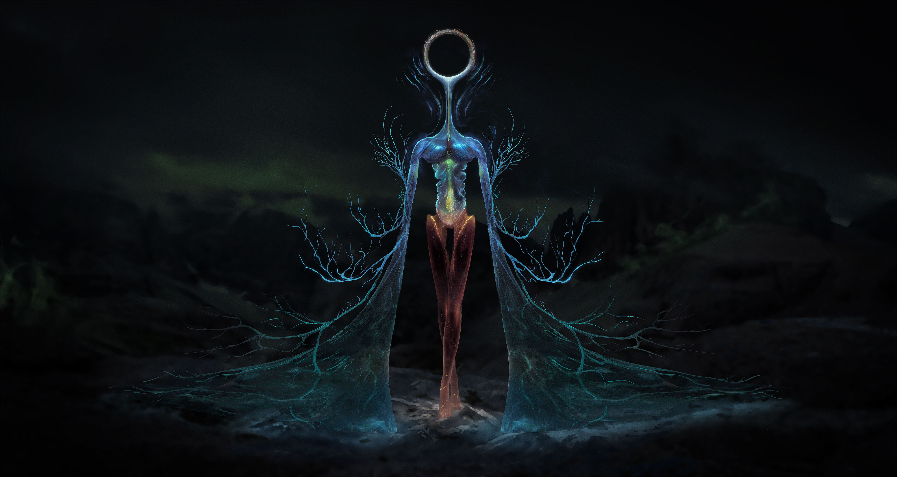
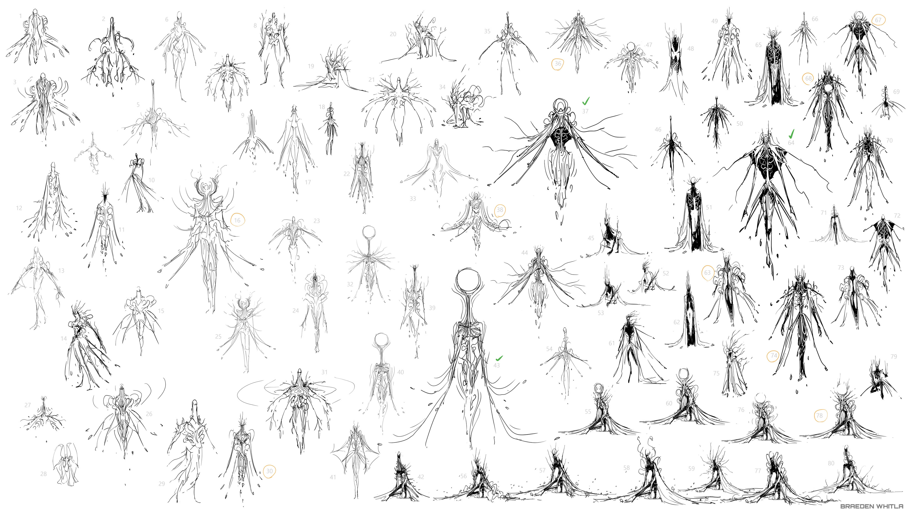
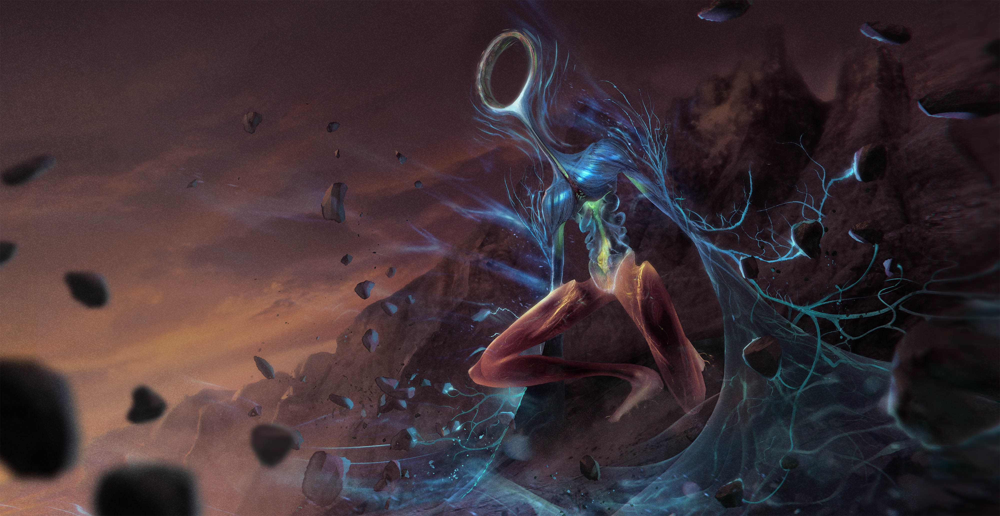

For a long time I thought it would be interesting to visually depict the functions of biological components of the human body through an anthropomorphic lens. It has been done a couple times in the past, "Osmosis Jones," "Cells at Work," etc, but I wanted to take it in a different direction than those.
This is the final design of the Mindhunter. They detect, track, and collect our thoughts, ideas, and imaginations, all of which are invisible. They use their dendrite membranes to help them detect the presence of a thought, reacting akin to goosebumps on the skin.
Before doing anything, I started with a very succinct brief. I had no idea what this thing looked like, but what I could figure out was the "essence" of this thing. Imagining how this thing moved and the impression it gave from its existence helped build the brief. Keeping it to two sentences kept it from getting too complex too quickly.

After finalizing the brief, I broke down the important parts:
"It wasn't from this world." -- This phrase, led me to the keyword "Mystical," as I didn't want something too terrifying. There's a beauty and fragility to the word mystical that you wouldn't get from a keyword like alien or unnatural. Cosmic could have worked, but there's a certain scale that comes along with that; a mystical being seems much smaller than a cosmic being, and I didn't want this thing to be ginormous.
"Unnerving" -- This word led me to "Veinlike-Grunge." I'll be honest, seeing bulging veins and wriggling forms affecting a surface gives me the heebie jeebies. Because I also wanted to evoke the functions of a neuron, it seemed quite harmonious to utilize dendrite structures of the neuron with other structures and art pieces that evoked similar sensations within me.
"Composed" "Sensing the landscape" -- This was the hardest one to figure out, but it led me to "Sensing-Focus." The idea that the postures enacted through meditation (a highly focused activity) indicate a distinct composure while harnessing one's attention to a great extent. Finding imagery for this was tough, but concentric radiating elements from a central core seemed to communicate that essence to me.
Armed with my references and briefs, I began sketching. I started by just straight up combining the visual elements of each reference and blending them into one another. Soon it became clear that many elements were being repeated over each iteration, and so I went back and searched for one final reference. The white concentric ring reference. It was at that point that the design took a turn, leading more into the surreal and unfamiliar. It also began to unveil its elegant and focused composure as I explored further.

While I do like something in each iteration, these were the four that I thought were the strongest of the bunch. It was tough as it seemed I kept falling into the "sinister" path. I really enjoyed the vein structures appearing at the shoulders of D, and the cloak feeling of B. The wispy nature of A was quite interesting, too. However, A, B, and D all felt a bit too edgy for the fragile elegance that the mystical component was looking for. C felt like it had the right balance of a composed, unnerving, yet beautiful creature not of this world.
At the same time I was searching for a design, I was also searching for a moment to illusrtate this creature. I kept thinking about the prompt, "sensing the landscape." Compositions of the creature looking onwards, out into the horizon seemed to hit close to what I was looking for.
The final illustration. A large emphasis was put on depicting the Mindhunter's sensing ability. Having the creature affect its immediate environment in some way was necessary in order to communicate that idea. And with that the Mindhunter was completed.